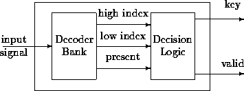

We add decision logic to detect valid DTMF signals and generate DTMF decoders for the Motorola 56001 processor (24-bit, 40 MHz) using the Ptolemy software environment [6]. Ptolemy is a freely distributable, extensible, graphical block diagram environment that interfaces with compilers, assemblers, hardware synthesis tools, and other external programs. Goertzel and NDFET decoders are included in Ptolemy 0.6, due for release on April 15, 1996, via the ftp site ptolemy.eecs.berkeley.edu. A MUSIC decoder has not yet been implemented.
The DTMF decoders have the following structure:

The decoder bank, after some observation time, outputs the index of the low and high frequency components and whether a DTMF signal might be present. Decision logic decodes the touch tone key and decides whether or not the detection is valid. Like the ADSP implementation, processing is performed on blocks of 205 samples for Goertzel and 300 for the NDFET.
We match the intensive signal processing computations and the accompanying decision logic to the Synchronous Dataflow (SDF) model of computation [13] in Ptolemy. A valid SDF subsystem always has a static implementation, i.e., one that does not require any run-time scheduling. This holds true whether we ultimately generate an implementation for a DSP processor, for multiple processors, as C code, or as a VLSI chip. Using knowledge of the target implementation, we can compute whether or not the system meets the real-time constraints. We specified the DTMF decoders as SDF block diagrams and verified them through simulation, and converted them to a Motorola 56001 implementation. Extra memory and instructions are generated to handle the I/O for each block.
On the 56001, a word is 3 bytes.
Samples arrive every 125  s.
Input data buffers take up 205 and 300 words, respectively, and are not
included in data memory usage.
s.
Input data buffers take up 205 and 300 words, respectively, and are not
included in data memory usage.
s/sample
s/sample